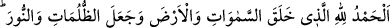
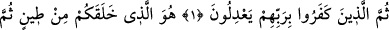
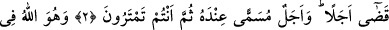
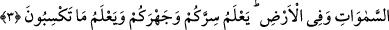

KÂİNATIN YARATICISI
Rahman ve Rahîm olan Allah’ın adıyla
1. Hamd, gökleri ve yeri yaratan, karanlıkları ve aydınlığı var eden Allah’a
mahsustur. (Bunca âyet vedelillerden) sonra kâfir olanlar (hâla putları) Rab’leri ile
denk tutuyorlar.
2. Sizi bir çamurdan yaratan, sonra ölüm zamanını takdir eden ancak O’dur. Bir
de O’nun katında muayyen bir ecel (kıyamet günü) vardır. Siz hâla şüphe
ediyorsunuz.
3. O, göklerde ve yerde tek Allah’tır. Gizlinizi, açığınızı bilir. (Hayır ve şerden) ne
kazanacağınızı da bilir.
“Hamd, Allah’a mahsustur” “__WORD__” lafzının başındaki elif-lâm istiğrak için olup
bütün övgü çeşitlerini ifade eder. “ __WORD__ ” lafzının başındaki lam da “ihtisas” için olup bu
övgünün Allah’a mahsus olduğunu ifade eder. Çünkü Allah Teâlâ âyetin sonunda
“inkârcılar Rab’lerine (başkalarını) denk tutuyorlar.” buyurmuş ve âyette esas olarak
vurgulayıp kastettiği (bütün övgülerin Allah’a ait olması) hususundan onların
Rab’lerine başkalarını denk tutmalarını ayırmıştır.
et-Te’vilâtü’n-necmiyye’de şöyle denilmiştir: “ __WORD__ ” lafzının başındaki lam, sahiplik
ifade eden temlik lâmıdır. Yani, dünyada ve ahirette gök ve yer ehlinin ettikleri her
hamd O’nun mülküdür, O’na aittir. Onlara kabiliyetleri ve güçleri nisbetinde O’nun
kudretinin alâmetlerini övüp hamd etmeleri için hamdetme istidadını veren O’dur.
Ancak yaratılmışların Allah’ı övüp hamdetmeleri mahluktur, fânîdir. Allah’ın kendisine
olan övgüsü ve hamdi ise kadîm ve bâkîdir.
Denilirse ki: Kendisine nimet verene şükretmek esasen vacib değil midir?... Nitekim
öğrettiği bilgiden ötürü öğretmene, âdil olduğu için devlet başkanına, iyiliğinden dolayı
iyilik edene teşekkür edilir. Rasûlullah (s.a.): “İnsanlara teşekkür etmeyi bilmeyen,
Allah’a da şükretmez.”[81] buyurmuştur.
Bu sorunun cevabı şöyledir: Nimet veren ve ihsanda bulunan kulu övmek ve tazimde